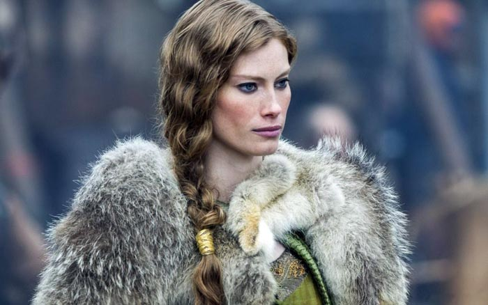
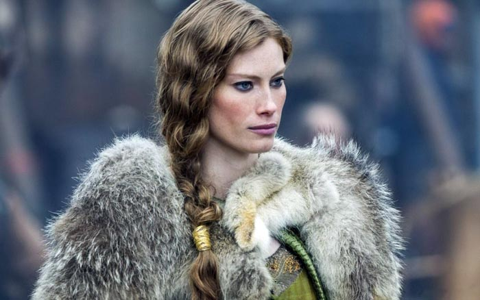

Рагна́р
Рагна́р Лодбро́к (др.-сканд. Ragnarr Loðbrók) - полулегендарный скандинавский конунг из рода Инглингов,
ключевой персонаж сериала.
Умелый воин и амбициозный вождь, Рагнар на протяжении почти всей своей жизни следует пути викинга.
Рассекая море в поисках боевой славы и наживы, он стремится обрести новые знания, открыть неизвестные
земли и изменить нелегкую судьбу своего народа, живущего в суровых условиях Скандинавского полуострова
Лаге́рта
Лаге́рта (или Хладге́рда, др.-сканд. Hlaðgerðr, лат. Ladgerda, Ladgertha или Lagertha; в сериале также
носит псевдоним Ингстад) - известная скандинавская воительница, упомянутая в хрониках Саксона Грамматика,
первая жена датского морского конунга Рагнара Лодброка.
Эта отважная и независимая женщина способна проявлять железную решимость, когда дело касается ее личного
достоинства, семьи или власти. Лагерта также известна своим милосердием и благородством.
Флóки
Флóки (др.-сканд. Flóki) - скандинавский кораблестроитель, активно участвующий в грабительских набегах
викингов на страны Европы. Близкий друг и соратник Рагнара Лодброка.
Эксцентричный и чудаковатый, он живет в уединенном доме в лесу, работая в своей мастерской на берегу
моря. Возлюбленный и муж Хельги. В их браке рождается дочь Ангрбода, но она умирает от лихорадки еще
маленькой. Спустя много лет по настоянию Хельги Флоки вынужден удочерить мавританскую девочку Танарус,
отношения с которой завершаются семейной трагедией.
Бьёрн
Бьёрн - сын Рагнара и Лагерты. Он умён, решителен и следует по стопам своего отца, намереваясь стать
грозным воином, отличным лидером и открыть новые земли.
Бьёрн был воспитан как истинный викинг. Он уважает своих родителей и мечтает статьи воином. Ему не
терпится проявить себя в настоящем бою. Однако как свойственно молодёжи, Бьёрн нетерпелив, часто замечает
только то, что находится перед ним, и излишне эмоционален. В бою Бьёрн проявляется себя как сильный
и доблестный воин, но ему явно не хватает опыта.
Áслауг
Áслауг (др.-сканд. Áslaug Sigurðardóttir, также известна под именами Аслёуг, Кра́ка («Ворона») и Кра́ба)
- полулегендарная скандинавская дроттнинг, упоминаемая в ряде средневековых саг.
Мать знаменитых скандинавских вождей - Уббе, Хвитсерка, Сигурда Змееглазого и Ивара Бескостного,
рожденных от Рагнара. Наибольшую любовь Аслауг испытывает к младшему сыну, ущербному с рождения Ивару.
Этот факт оказывает значительное влияние на поступки самой матери и ее возмужавшего отпрыска.

 
